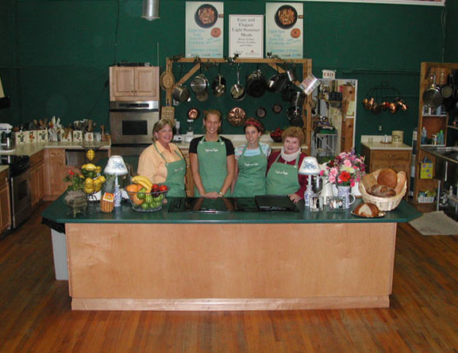

Welcome to Truffles and Trifles!
Truffles and Trifles started 24 years ago as a dream to share love of cooking and learn how to make being in the kitchen fun. Now, 24 years later, Truffles and Trifles is the largest, most successful cooking school in the Southeast and was recently named one of the top five cooking schools in the country by the Food Network. Come and enjoy a unique experience with your friends and schedule a private party, or let us host a team-building event for your corporation.
We are more than just a cooking school. We are also a gourmet shop filled with culinary treasures. We carry foods from around the world. From Droste cocoa, Belgium chocolate for cooking, Neilsen Massey vanillas, Badia olive oil, and hundreds of food treasures to make your culinary heart delighted. We also have the latest in kitchen equipment and gadgets to make cooking even more fun.
Looking for a unique gift? Our gourmet gift baskets are customized to your needs and elegantly prepared with unique food items from around the world. There are hundreds of treasures from which to choose, including our fresh-made cookies! Truffles and Trifles can deliver your basket, wrapped in imported papers and tied with festive bows, around the corner or around the world.
We invite you to browse around our site or come on in and have a wonderful experience celebrating food!